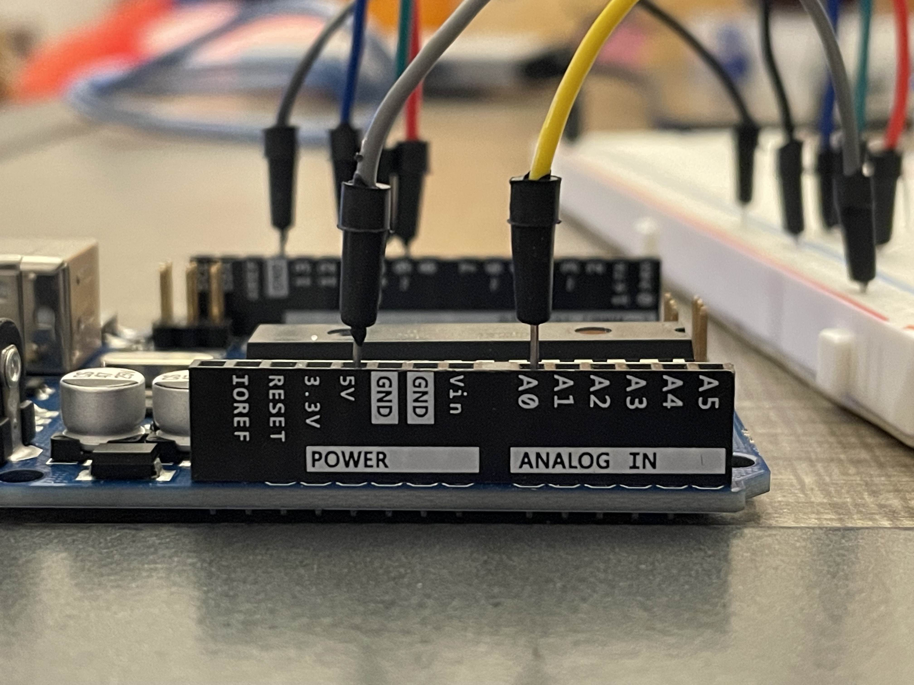

A3: Input Output!
Photoresistor-Controlled Fading RGB Nightlight
Overview

This project uses a photoresistor (light sensor) in a voltage divider to control an RGB LED’s brightness and color depending on light levels.
As the room gets darker, the LED becomes brighter. The circuit demonstrates analog sensing and analog output using analogRead(), analogWrite(), map(), and an if statement.
The serial monitor prints messages that describe whether it is bright or dark, printing "it's bright out!" or "it's pretty dark, here's a light!" based on the photoresistor reading, and adjusting the LED brightness accordingly.
Schematic Diagram
Circuit Images

Voltage Divider Calculations:
The circuit uses a photoresistor (LDR) and a 10 kΩ fixed resistor in a voltage divider.
Based on measured values, the photoresistor’s resistance is approximately 550 Ω when bright
and around 80 kΩ when covered. These were estimated from the analog readings on the serial monitor.
Using the voltage divider equation Vout = Vin * R2 / (R1 + R2), assuming the photoresistor
is R1 and the 10 kΩ resistor is R2, with Vin = 5 V:
When bright (R1 = 550 Ω):
Vout = 5 * 10 kΩ / (550 Ω + 10 kΩ) = ~4.73 V
When covered (R1 = 80 kΩ):
Vout = 5 * 10 kΩ / (80 kΩ + 10 kΩ) = ~0.56 V
If the resistors were switched (photoresistor as R2 and fixed resistor as R1), the output would invert:
When bright (R2 = 550 Ω):
Vout = 5 * 550 Ω / (10 kΩ + 550 Ω) = ~0.26 V
When covered (R2 = 80 kΩ):
Vout = 5 * 80 kΩ / (10 kΩ + 80 kΩ) = ~4.44 V
This configuration means the circuit produces a high voltage when it’s bright and a low voltage when dark,
allowing the code to invert the brightness mapping to make the LED light up in darker conditions.
To confirm safety for the Arduino input, we can estimate current through the lowest resistance case
(R1 + R2 ≈ 10.55 kΩ):
I = 5 V / 10.55 kΩ ≈ 0.47 mA, which is well below the 40 mA pin limit.
Arduino Code
This code fades an RGB LED through colors while adjusting brightness based on light level.
when it’s dark, the light becomes brighter. the serial monitor displays sensor readings
and brightness levels along with a message describing current conditions.
// pin definitions for rgb led
const int redPin = 9; // red pin connected to digital pwm pin 9
const int greenPin = 10; // green pin connected to digital pwm pin 10
const int bluePin = 11; // blue pin connected to digital pwm pin 11
// photoresistor pin (analog input)
const int photoResPin = A0; // photoresistor connected to analog pin a0
// variables for smooth color fading
int redValue = 255; // starting color intensity -> red fully on
int greenValue = 0;
int blueValue = 0;
int fadeStep = 3; // amount to change each color per update (higher = faster fade)
// timing variables
unsigned long prevMillis = 0;
int fadeDelay = 1; // delay between color updates (lower = faster fade)
void setup() {
pinMode(photoResPin, INPUT); // set photoresistor pin as input
pinMode(redPin, OUTPUT); // set rgb pins as outputs
pinMode(greenPin, OUTPUT);
pinMode(bluePin, OUTPUT);
Serial.begin(9600); // start serial monitor for debugging
}
void loop() {
// read the photoresistor value -> range 0–1023
int ldrValue = analogRead(photoResPin);
// map sensor reading to brightness (inverted -> dark = bright)
int brightness = map(ldrValue, 100, 500, 255, 0);
brightness = constrain(brightness, 0, 255); // keep within valid range
// choose a message based on brightness
String message;
if (ldrValue < 400) {
message = "it's pretty dark, here's a light!";
} else {
message = "it's bright out!";
}
// print all info in one line
Serial.print("ldr: ");
Serial.print(ldrValue);
Serial.print(" | brightness: ");
Serial.print(brightness);
Serial.print(" | ");
Serial.println(message);
// handle timing -> prevents blocking
unsigned long currentMillis = millis();
if (currentMillis - prevMillis >= fadeDelay) {
prevMillis = currentMillis;
fadeColors(); // smoothly change color step
}
// apply brightness scaling and update led color
int redScaled = map(redValue, 0, 255, 0, brightness);
int greenScaled = map(greenValue, 0, 255, 0, brightness);
int blueScaled = map(blueValue, 0, 255, 0, brightness);
analogWrite(redPin, redScaled);
analogWrite(greenPin, greenScaled);
analogWrite(bluePin, blueScaled);
}
// smoothly fade through rgb colors
void fadeColors() {
static int stage = 0; // track color transition stage
switch (stage) {
case 0: // red -> green
greenValue += fadeStep;
if (greenValue >= 255) { greenValue = 255; stage = 1; }
break;
case 1: // green -> blue
redValue -= fadeStep;
if (redValue <= 0) { redValue = 0; stage = 2; }
break;
case 2: // blue -> red
blueValue += fadeStep;
if (blueValue >= 255) { blueValue = 255; stage = 3; }
break;
case 3: // decrease green -> green fades out
greenValue -= fadeStep;
if (greenValue <= 0) { greenValue = 0; stage = 4; }
break;
case 4: // increase red -> red fades in
redValue += fadeStep;
if (redValue >= 255) { redValue = 255; stage = 5; }
break;
case 5: // decrease blue -> blue fades out
blueValue -= fadeStep;
if (blueValue <= 0) { blueValue = 0; stage = 0; }
break;
}
}
Example Serial Monitor Output
ldr: 89 | brightness: 255 | it's pretty dark, here's a light!
ldr: 543 | brightness: 0 | it's bright out!
ldr: 91 | brightness: 255 | it's pretty dark, here's a light!
ldr: 541 | brightness: 0 | it's bright out!
Additional Questions
1: In your voltage divider, can the variable resistor be either R1 or R2 or does it need to be one or the other? Justify your answer with example calculations.
The variable resistor can be either R1 or R2, but the output changes direction depending on which it is.
If the photoresistor is R2 (bottom resistor), Vout increases with light.
If it is R1 (top resistor), Vout decreases with light.
Example: Rfixed = 10k ohms, Rphoto = 2k ohms (bright) and 30k ohms (dark)
When bright -> Vout = 5 * (10 / (10 + 2)) = 4.17V
When dark -> Vout = 5 * (10 / (10 + 30)) = 1.25V
So the photoresistor can be either position depending on whether you want voltage to go up or down with brightness.
2: Draw a graph where the x-axis is time and the y-axis is voltage. Plot the voltage at V-measure of your voltage divider of your shared gif.
To find these voltages, I used the voltage divider formula Vout = Vin * R2 / (R1 + R2), where Vin = 5V and the fixed resistor (R2) was 10kΩ. The photoresistor (R1) changes resistance depending on the light level, so I estimated it to be about 3kΩ when bright and 100kΩ when covered based on typical LDR behavior. Substituting these values gives approximately 3.85V when bright (5 * 10 / (3 + 10)) and 0.45V when dark (5 * 10 / (100 + 10)).
3: AnalogWrite and analogRead are respectively 8-bit and 10-bit values. Imagine you had 10-bit PWM and a 16-bit analog-to-digital converter instead. How would this change your map() code? Explain your answer.
The map() function would need to be changed to match the new input and output ranges.
For a 16-bit ADC (0 to 65535) and 10-bit PWM (0 to 1023), the mapping line would become:
int brightness = map(ldrValue, 0, 65535, 1023, 0);
This gives higher resolution readings and smoother brightness control. The logic stays the same.
AI Assistance Statement
I used AI to help refine the visual presentation of my website, mainly by adjusting the local styling to make the layout more cohesive and visually appealing.
For the Arduino code, I wrote the core logic myself, but I used AI as a corrective and debugging tool to help identify errors and improve clarity.
The conceptual design and structure of the code were developed on my own.